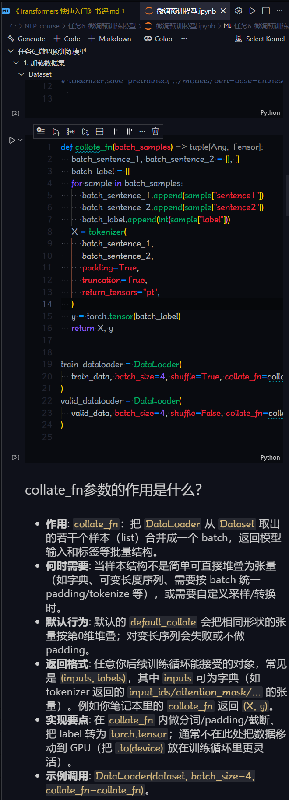

前言 内容 点评 后记
前言
从 2017 年，Google 发表著名论文《Attention is All You Need》以来，Transformers 架构迅速成为自然语言处理（NLP）领域的主流方法。随着时间的推移，Transformers 不仅在 NLP 中取得了巨大成功，还扩展到了计算机视觉、语音处理等多个领域。
内容
《Transformers 快速入门》[1]是一本在线的电子书，通过这本书读者可以快速了解 Transformers 的基本概念、架构以及实际应用。以下是对这本书的目录：
第一部分：背景知识
第一章：自然语言处理[2]
第二章：Transformer 模型[3]
第三章：注意力机制[4]
第二部分：初识 Transformers
第四章：开箱即用的 pipelines[5]
第五章：模型与分词器[6]
第六章：必要的 Pytorch 知识[7]
第七章：微调预训练模型[8]
第三部分：Transformers 实战
第八章：快速分词器[9]
第九章：序列标注任务[10]
第十章：翻译任务[11]
第十一章：文本摘要任务[12]
第十二章：抽取式问答[13]
第十三章：Prompting 情感分析[14]
第四部分：大语言模型时代
第十四章：大语言模型技术简介[15]
第十五章：预训练大语言模型[16]
第十六章：使用大语言模型[17]
第十七章：指令微调 FlanT5 模型
第十八章：指令微调 Llama2 模型
点评
因为篇幅有限，这本书对知识点的讲解不算细致。比如，如何对模型进行微调时，虽然给了代码示例，但没有深入解释每一行代码的含义和作用，对初学者并友好。所以，初学者也不必太过较真，大致浏览一下，对 transformers 有个大致了解即可。如果，想深入学习 transformers，建议针对你所关注的具体任务，找一些更专业的书籍或教程进行学习。
其实，这书内容方面有点混乱，比如分词器方面在两个章节都有提及，感觉有点重复。不如把相关内容集中在一起讲解，可能会更好一些。
还有，所谓的必要的 Pytorch 知识，内容也比较浅显，仅凭这些知识，可能还不足以应对实际项目中的各种情况。
总体来说，这本书适合想要了解 transformers 是什么的读者，作为入门参考资料还不错。但如果想深入掌握 transformers 的原理和应用，还是需要结合其他更详尽的资源进行学习。
后记
这本书作者没有提供书的文本，只能在网页中观看。不过我已经利用 简悦 插件把网页内容转换成了 Markdown 格式，方便离线阅读。并且，已经把部分章节编写成了 jupyter notebook，方便实践操作。此外，还改正了其中部分的错误代码，用 AI 生成的方式，增加了一些知识讲解。

如果你需要这些资源，可以在公众号后台回复关键词 Transformers 获取下载链接。希望对大家有所帮助！
《Transformers 快速入门》: https://transformers.run/
[2]自然语言处理: https://transformers.run/c1/nlp/
[3]Transformer 模型: https://transformers.run/c1/transformer/
[4]注意力机制: https://transformers.run/c1/attention/
[5]开箱即用的 pipelines: https://transformers.run/c2/2021-12-08-transformers-note-1/
[6]模型与分词器: https://transformers.run/c2/2021-12-11-transformers-note-2/
[7]必要的 Pytorch 知识: https://transformers.run/c2/2021-12-14-transformers-note-3/
[8]微调预训练模型: https://transformers.run/c2/2021-12-17-transformers-note-4/
[9]快速分词器: https://transformers.run/c3/2022-03-08-transformers-note-5/
[10]序列标注任务: https://transformers.run/c3/2022-03-18-transformers-note-6/
[11]翻译任务: https://transformers.run/c3/2022-03-24-transformers-note-7/
[12]文本摘要任务: https://transformers.run/c3/2022-03-29-transformers-note-8/
[13]抽取式问答: https://transformers.run/c3/2022-04-02-transformers-note-9/
[14]Prompting 情感分析: https://transformers.run/c3/2022-10-10-transformers-note-10/
[15]大语言模型技术简介: https://transformers.run/c4/c14_intro_to_llms/
[16]预训练大语言模型: https://transformers.run/c4/c15_pretrain_llms/
[17]使用大语言模型: https://transformers.run/c4/c16_finetune_llms